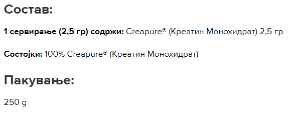

Креатин е идеален производ со широк спектар на потрошувачи, од бодибилдери до спинтери, но најважно за луѓе кои сакаат да ја подобрат својата сила, брзина и чиста телесна маса. Креатинот ја зголемува физичката активност во поледователни серии од кратки и многу интензивни вежби.
